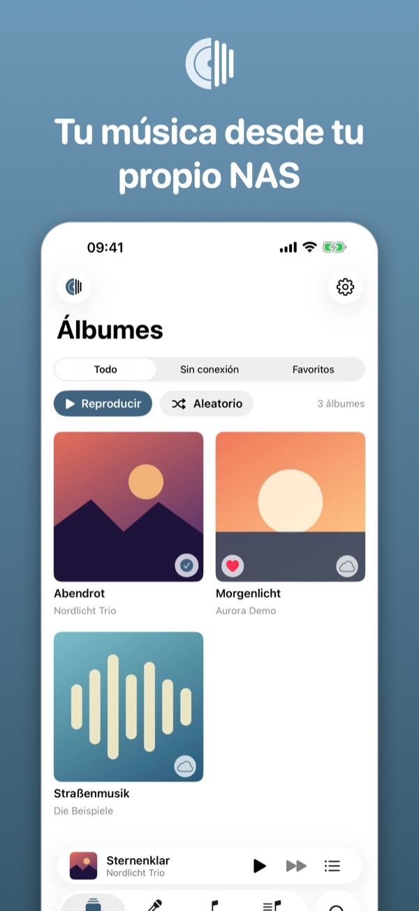
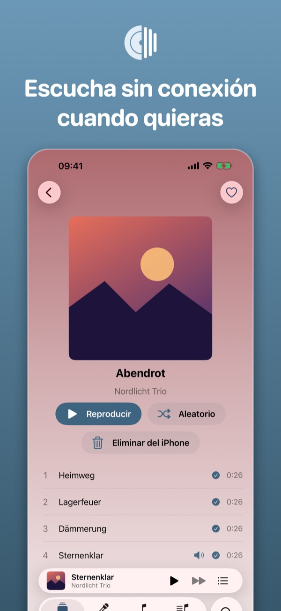
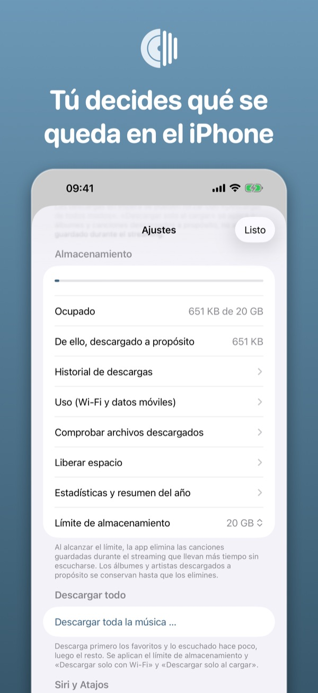
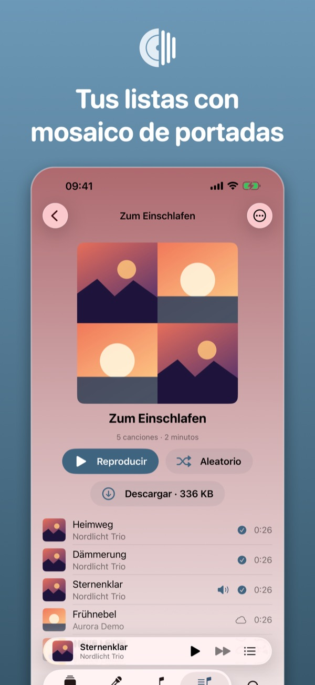
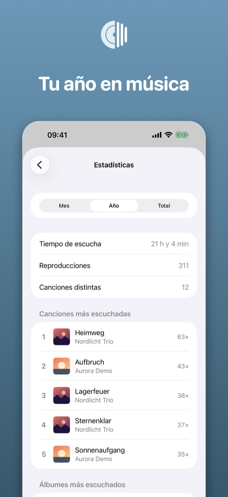
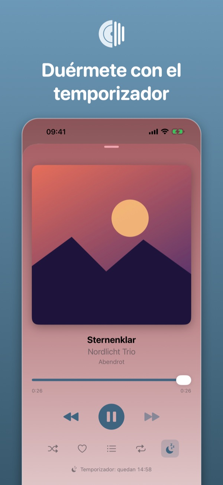
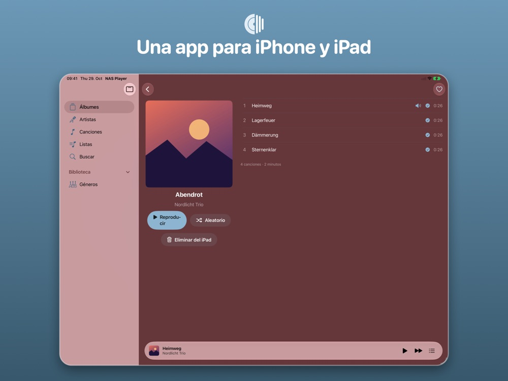
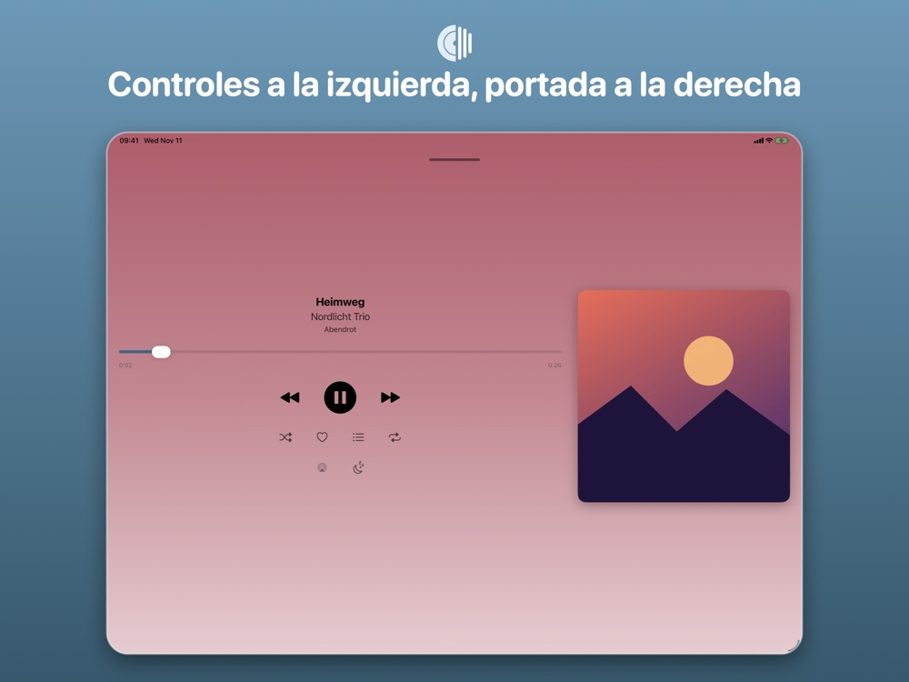
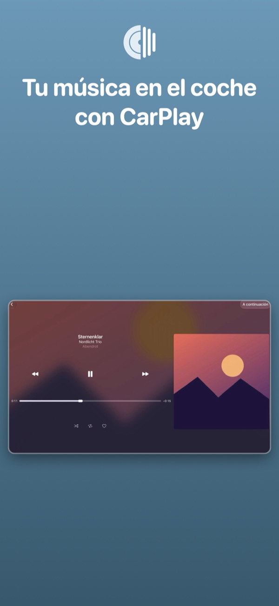

NAS Player
Música de tu Synology en CarPlay, sin conexión y sin suscripción.
Descargar en el App StoreGratis · sin compras dentro de la app
Vista previa
Álbumes, descarga sin conexión, almacenamiento, listas, estadísticas y temporizador en el iPhone.
Una app para iPhone y iPad: barra lateral, álbum a dos columnas y un reproductor con controles a la izquierda y portada a la derecha.
Elige en Inicio, Biblioteca, listas y géneros directamente en el coche.









CarPlay con selección
Inicio con álbumes recientes y favoritos, biblioteca con mosaico de portadas, listas y géneros. Eliges directamente en el coche.
Sin conexión, con control
Descarga álbumes y artistas a propósito, con tamaño visible y límite de almacenamiento. Las descargas siguen en segundo plano.
Privado y gratis
Sin cuentas, sin publicidad, sin seguimiento. La contraseña está en el llavero y la conexión va solo a tu NAS.
Descripción
NAS Player reproduce la música de tu NAS Synology: en iPhone y iPad, de viaje, sin conexión y en el coche con CarPlay.
Escucha toda tu biblioteca en streaming con portadas y búsqueda, descarga álbumes a propósito, guarda favoritos y controla todo con Siri y Atajos.
Qué hace la app
- Explorar y reproducir en streaming toda la biblioteca sin descargarlo todo
- Descargar álbumes, artistas y canciones al iPhone a propósito (con tamaño y límite de almacenamiento)
- Favoritos, lista a continuación, reproducción aleatoria y repetición; géneros y álbumes de varios discos
- CarPlay con Inicio, cuadrícula de biblioteca, listas y aviso sin conexión
- Siri y Atajos: «Reproduce mis favoritos con NAS Player» (todos los comandos)
- Modo demo con música de ejemplo, sin NAS
- Sin publicidad, sin seguimiento, sin cuentas
- Sincronizar los favoritos con tu NAS (opcional), AirPlay, letras y velocidad para audiolibros
Requisito
Un NAS Synology con Audio Station accesible mediante una dirección https con certificado válido o mediante QuickConnect. Sin NAS puedes probar la app en modo demo.